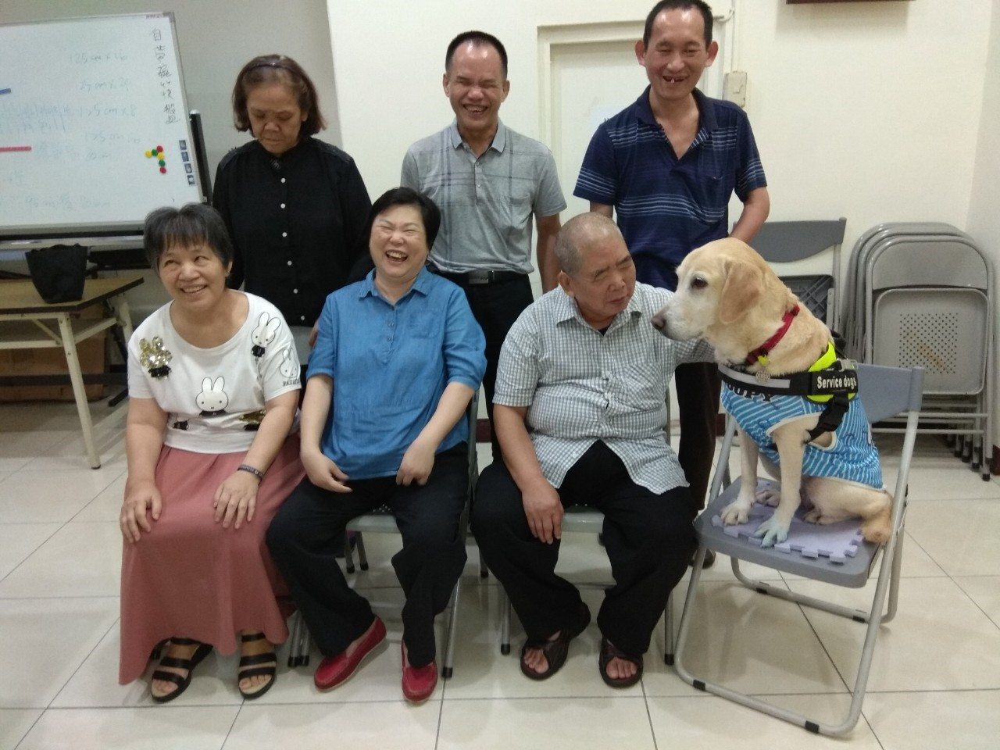

<section style="max-width: 900px; margin: 60px auto; padding: 40px; background-color: #FFFCF5; border-radius: 16px;">
  <div style="display: flex; flex-direction: column; gap: 24px; color: #333; line-height: 1.8;">
    

    <h2 style="font-size: 28px; text-align: center; color: #005599; margin-top: 0;">社工服務與個案管理支持</h2>

    <p><strong>當您看不見方向，我們願成為您的眼與導航。</strong></p>
    <p>視力改變常是突如其來的衝擊，不只看不見眼前的事物，更可能迷失未來的方向、職涯選擇與生活自理。中華啟明重建協會設立「個案管理制度」，由專業社工擔任服務起點，陪伴視障朋友與家庭一起走過轉變，重建信心與生活。</p>

    <p><strong>🎯 服務目標</strong><br>
    協助適應視力障礙帶來的生活轉變<br>
    制定個別化生活／職業重建計畫<br>
    整合資源，降低生活衝擊<br>
    成為服務連結與陪伴支持的核心窗口</p>

    <p><strong>🧩 服務內容</strong></p>
    <ol>
      <li>初步接觸與評估：了解視力狀況、生活挑戰與目標，建議可使用的資源。</li>
      <li>個別計畫制定：依需求提供生活訓練、職能培育、心理支持、輔具協助等。</li>
      <li>資源轉介整合：協助申請手冊補助、醫療社福連結、外部機構合作。</li>
      <li>持續追蹤與調整：定期訪談、根據變化調整服務方向，陪伴穩定成長。</li>
    </ol>

    <p><strong>👥 服務對象</strong><br>
    新近視障、感到迷惘與焦慮者<br>
    有生活自理、職涯、社交困難者<br>
    家屬需支持與資源了解者<br>
    需要協助但不知從何開始者</p>

    <p><strong>📍 服務區域遍及北、中、南各縣市，提供一對一專業陪伴</strong><br>
    📞 洽詢專線｜04-2203-5858<br>
    📧 Email｜eyes22035858@hotmail.com<br>
    🏢 地址｜台中市北區公園路184號B1</p>

    <p style="color: #c4302b; font-weight: bold;">❤️ 您不需要一個人面對黑暗。我們會是您走向光亮的同行者。</p>
  </div>
</section>
